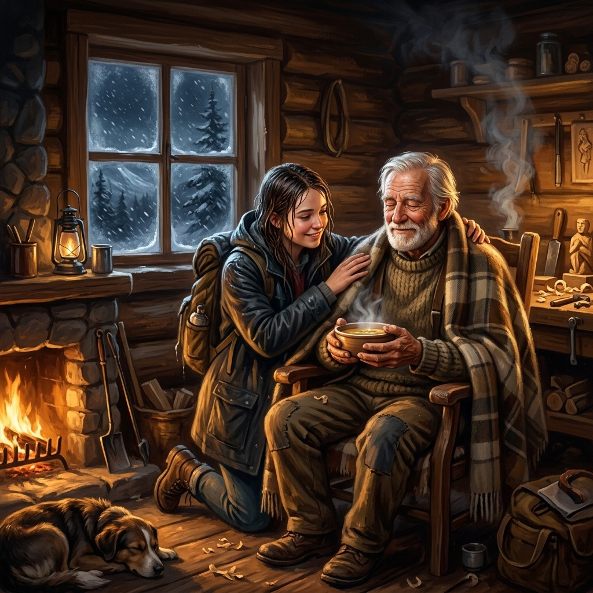
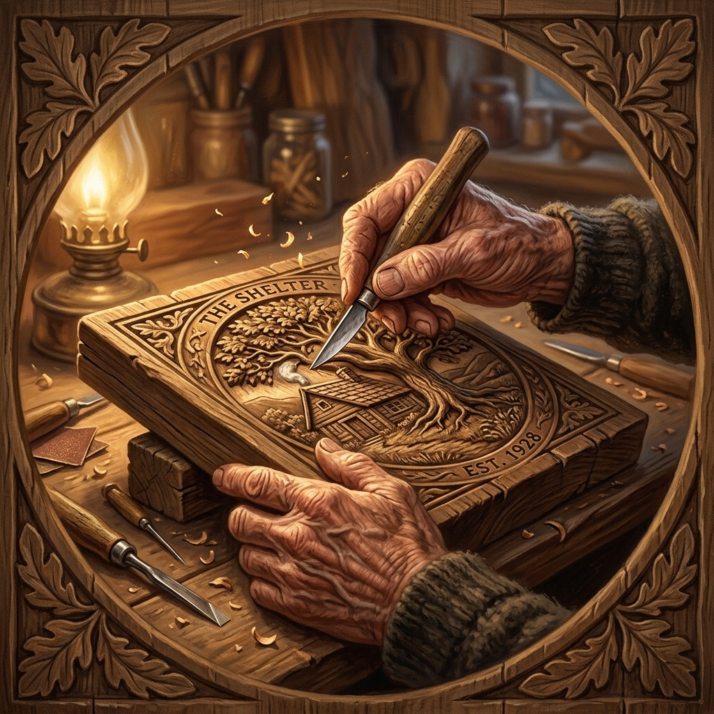
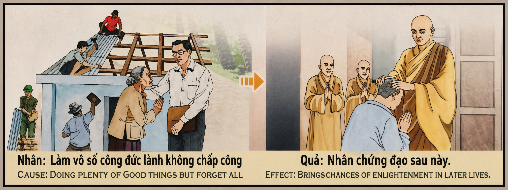

La Memoria del Barro y la Luz The Memory of Clay and Light La Memoria del Fango e della Luce 泥土与光芒的记忆 ذاكرة الطين والنور Память глины и света Das Gedächtnis von Lehm und Licht La Mémoire de l'Argile et de la Lumière 泥と光の記憶 A Memória do Barro e da Luz Ký Ức Của Đất Sét Và Ánh Sáng
"El alma pura siembra el bien y lo entrega al viento, olvidando la mano que lo dio; pero el universo retiene cada semilla, y en el invierno de tu vida, las flores del olvido regresarán para abrigar tu frío." "The pure soul sows goodness and delivers it to the wind, forgetting the hand that gave it; but the universe retains every seed, and in the winter of your life, the flowers of forgetfulness will return to shelter your cold." "L'anima pura semina il bene e lo dona al vento, dimenticando la mano che lo ha donato; ma l'universo conserva ogni seme, e nell'inverno della tua vita, i fiori dell'oblio torneranno a riparare il tuo freddo." “纯洁的灵魂播种良善，却把它交给风，却忘记了给予它的那只手；但宇宙保留着每一粒种子，在你生命的冬天，遗忘之花会回来为你遮风挡雨。” "النفس الطاهرة تزرع الخير وتعطيه للريح، وتنسى اليد التي أعطته. لكن الكون يحتفظ بكل بذرة، وفي شتاء حياتك ستعود زهور النسيان لتأوي بردك." «Чистая душа сеет добро и отдает его ветру, забывая руку, давшую его; но вселенная сохраняет каждое семя, и зимой твоей жизни цветы забвения вернутся, чтобы укрыть твой холод.» „Die reine Seele sät Gutes und gibt es dem Wind und vergisst die Hand, die es gegeben hat; Aber das Universum behält jeden Samen, und im Winter Ihres Lebens werden die Blumen des Vergessens zurückkehren, um Ihre Kälte zu schützen.“ « L'âme pure sème le bien et le donne au vent, oubliant la main qui l'a donné ; mais l'univers retient chaque graine, et dans l'hiver de votre vie, les fleurs de l'oubli reviendront abriter votre rhume. » 「純粋な魂は良い種を蒔き、それを風に任せて、それを与えた手を忘れます。しかし、宇宙はそれぞれの種を保持しており、あなたの人生の冬には、忘却の花があなたの寒さを守るために戻ってきます。」 "A alma pura semeia o bem e o dá ao vento, esquecendo-se da mão que o deu; mas o universo retém cada semente, e no inverno da sua vida, as flores do esquecimento retornarão para abrigar o seu frio." "Linh hồn thuần khiết gieo trồng điều lành rồi gửi vào cơn gió, lãng quên bàn tay đã trao đi; nhưng vũ trụ lưu giữ từng hạt giống, và trong mùa đông của cuộc đời bạn, những bông hoa của sự lãng quên sẽ trở về để sưởi ấm cái lạnh của bạn."
En la sublime geometría del espíritu, existe una virtud que brilla con una luz blanca y silenciosa, casi invisible para el ojo del mundo: el olvido de las propias buenas obras. Comúnmente, el ser humano busca en sus actos de generosidad una confirmación de su valía, un destello de orgullo o una moneda de gratitud. Sin embargo, el karma más excelso, aquel que eleva el alma a las esferas celestiales más puras, es el que se realiza con desapego absoluto. Hacer el bien y borrar el propio nombre del agua; sembrar un jardín en el desierto y continuar el camino sin volver la cabeza para ver si florece. Es la virtud sin huella, donde la mano que da se disuelve en el mismo acto de dar, y el yo se diluye en el amor universal.
¿Por qué posee este olvido un valor tan inconmensurable en la balanza del cosmos? Porque el orgullo y el recuerdo constante de las propias virtudes actúan como un lastre sutil que encadena el mérito a la tierra. Quien lleva la cuenta de sus favores, quien exige silenciosamente reconocimiento o se complace en su propia santidad, ya ha recibido su recompensa en la satisfacción transitoria de su ego. En cambio, quien hace el bien de manera tan natural como respira, olvidando al instante la ayuda prestada, mantiene su canal espiritual libre de toda escoria de soberbia. Para este sembrador desmemoriado, la compasión no es una transacción ni un deber, sino el perfume espontáneo de su ser.
No obstante, aunque el hacedor olvide su siembra, el universo no padece de amnesia. El barro del mundo y el aire del destino poseen una memoria eterna y perfecta. Cada acto de amor desinteresado, cada refugio levantado en silencio, queda esculpido en las corrientes invisibles del éter kármico. En la viñeta del templo, la mujer cansada y vulnerable representa al alma en su momento de mayor fragilidad o confusión espiritual. El hombre que le toca el hombro con infinita dulzura es la personificación de su propio karma positivo que regresa. Cuando ella ha olvidado quién es, cuando la fatiga del camino oscurece su mente y sus fuerzas declinan, la vida misma levanta a su alrededor los frutos de las semillas que una vez sembró y olvidó.
El retorno de este karma olvidado posee una belleza sobrecogedora. Se manifiesta como un auxilio inesperado en medio de la tormenta, un refugio cálido que se abre en el paso helado de la vida, o una mano desconocida que nos sostiene cuando estamos a punto de caer. El alma desmemoriada que pasó su existencia aliviando el dolor ajeno sin pedir nada, descubre en el invierno de su vida que está rodeada de un calor invisible. No es un favor ajeno ni un azar del destino; es la devolución exacta del amor que una vez entregó al viento. Quien siembra luz y la olvida, camina protegido por una constelación de flores invisibles que el universo hará florecer justo a tiempo para guiar su regreso a casa.
In the sublime geometry of the spirit, there exists a virtue that shines with a white, silent light, almost invisible to the eyes of the world: the forgetting of one's own good deeds. Commonly, human beings seek in their acts of generosity a confirmation of their worth, a spark of pride, or a coin of gratitude. However, the most exalted karma, that which elevates the soul to the purest celestial spheres, is that which is performed with absolute detachment. To do good and erase one's name from the water; to plant a garden in the desert and continue the journey without looking back to see if it blossoms. It is the trackless virtue, where the hand that gives dissolves in the very act of giving, and the self is diluted in universal love.
Why does this forgetfulness possess such an immeasurable value in the scales of the cosmos? Because pride and the constant remembrance of one's own virtues act as a subtle ballast that chains merit to the earth. Those who keep score of their favors, who silently demand recognition, or who take pleasure in their own holiness have already received their reward in the transient satisfaction of their ego. On the contrary, those who do good as naturally as they breathe, instantly forgetting the help they have provided, keep their spiritual channel free from all dross of vanity. For this forgetful sower, compassion is neither a transaction nor a duty, but the spontaneous fragrance of their being.
Nonetheless, though the doer may forget their sowing, the universe does not suffer from amnesia. The clay of the world and the wind of destiny possess an eternal and perfect memory. Every act of selfless love, every shelter built in silence, remains sculpted in the invisible currents of the karmic ether. In the temple's mural, the tired and vulnerable woman represents the soul in its moment of greatest fragility or spiritual confusion. The man who touches her shoulder with infinite tenderness is the personification of her own returning positive karma. When she has forgotten who she is, when the weariness of the road darkens her mind and her strength declines, life itself raises around her the fruits of the seeds she once sowed and forgot.
The return of this forgotten karma has a breathtaking beauty. It manifests as unexpected aid in the midst of a storm, a warm shelter that opens in the freezing mountain pass of life, or an unknown hand that catches us when we are about to fall. The forgetful soul that spent its existence easing another's pain without asking for anything discovers in the winter of their life that they are surrounded by an invisible warmth. It is neither a favor from another nor a chance of fate; it is the exact return of the love they once gave to the wind. Whoever sows light and forgets it walks protected by a constellation of invisible flowers that the universe will cause to bloom just in time to guide their return home.
Nella sublime geometria dello spirito c'è una virtù che risplende di una luce bianca e silenziosa, quasi invisibile agli occhi del mondo: l'oblio delle proprie opere buone. Comunemente, gli esseri umani cercano nei loro atti di generosità una conferma del proprio valore, un lampo di orgoglio o una moneta di gratitudine. Tuttavia il karma più eccellente, quello che eleva l'anima alle sfere celesti più pure, è quello compiuto con assoluto distacco. Fare il bene e cancellare il proprio nome dalle acque; pianta un giardino nel deserto e prosegui lungo il sentiero senza voltare la testa per vedere se fiorisce. È virtù senza traccia, dove la mano che dona si dissolve nell'atto stesso del donare e l'io si diluisce nell'amore universale.
Perché questo oblio ha un valore così incommensurabile nell’equilibrio del cosmo? Perché l'orgoglio e il ricordo costante delle proprie virtù agiscono come una sottile zavorra che incatena il merito alla terra. Chi tiene conto dei suoi favori, chi silenziosamente esige riconoscimento o si rallegra della propria santità, ha già ricevuto la sua ricompensa nella temporanea soddisfazione del suo ego. Chi invece fa il bene con la stessa naturalezza con cui respira, dimenticando all'istante l'aiuto ricevuto, mantiene il suo canale spirituale libero da tutte le scorie dell'orgoglio. Per questo seminatore smemorato, la compassione non è né una transazione né un dovere, ma il profumo spontaneo del suo essere.
Tuttavia, anche se il creatore dimentica la sua semina, l’universo non soffre di amnesia. Il fango del mondo e l'aria del destino hanno una memoria eterna e perfetta. Ogni atto di amore disinteressato, ogni rifugio eretto nel silenzio, è scolpito nelle correnti invisibili dell'etere karmico. Nella vignetta del tempio, la donna stanca e vulnerabile rappresenta l'anima nel suo momento di massima fragilità o confusione spirituale. L'uomo che ti tocca la spalla con infinita gentilezza è la personificazione del tuo karma positivo che ritorna. Quando ha dimenticato chi è, quando la fatica del cammino oscura la sua mente e le sue forze diminuiscono, la vita stessa fa sorgere intorno a lei i frutti dei semi che un tempo aveva seminato e dimenticato.
Il ritorno di questo karma dimenticato ha una bellezza travolgente. Si manifesta come un aiuto inaspettato in mezzo alla tempesta, un caldo rifugio che si apre nel gelido passaggio della vita, o una mano sconosciuta che ci sostiene quando stiamo per cadere. L'anima smemorata che ha passato la sua esistenza ad alleviare il dolore degli altri senza chiedere nulla, scopre nell'inverno della sua vita di essere avvolta da un calore invisibile. Non è un favore degli altri o un caso del destino; È l'esatto ritorno dell'amore che un tempo donò al vento. Colui che semina luce e la dimentica, cammina protetto da una costellazione di fiori invisibili che l'universo farà sbocciare giusto in tempo per guidare il suo ritorno a casa.
在精神的崇高几何学中，有一种美德闪烁着白色而寂静的光芒，世人的眼睛几乎看不见：忘记自己的善行。通常，人类在慷慨的行为中寻求对自己价值的确认、一丝自豪感或一丝感激之情。然而，最优秀的业力，将灵魂提升到最纯净的天界，是以绝对超然的方式进行的。行善，把名字从水中抹去；在沙漠中种植一个花园，然后沿着小路继续走，不要回头看它是否开花。这是无痕的美德，给予的手在给予的行为中消失了，自我在博爱中被稀释。
为什么这种遗忘对于宇宙的平衡具有如此不可估量的价值？因为骄傲和对自己美德的持续记忆就像一个微妙的镇流器，将功德锁在地球上。那些留意自己的恩惠、默默地要求认可或以自己的圣洁为乐的人，已经在自我暂时的满足中得到了回报。另一方面，行善如呼吸般自然的人，立即忘记了所提供的帮助，使他的精神通道没有任何骄傲的渣滓。对于这个健忘的播种者来说，同情心既不是一种交易，也不是一种义务，而是他生命中自发的芬芳。
然而，即使创造者忘记了自己的播种，宇宙也不会失忆。世界的泥土，命运的空气，有着永恒而完美的记忆。每一个无私的爱的行为，每一个在沉默中建立的庇护所，都是在无形的业力以太流中雕刻而成的。在寺庙的小插图中，疲惫而脆弱的女人代表了灵魂最脆弱或精神混乱的时刻。那个以无限温柔触碰你肩膀的男人，就是你自己回向善业的化身。当她忘记了自己是谁，当旅途的疲劳使她的心灵变得阴暗、体力下降时，生活本身就会在她周围结出她曾经播下却忘记的种子的果实。
这种被遗忘的业力的回归具有压倒性的美丽。它表现为暴风雨中意想不到的帮助，在冰冷的生命通道中打开的温暖庇护所，或者在我们即将跌倒时支撑我们的未知之手。健忘的灵魂一生只求减轻别人的痛苦，却不求任何东西，却在生命的冬天发现自己被一种无形的温暖所包围。这不是别人的恩惠，也不是命运的机缘；这正是他曾经给予风的爱的回报。播种光明却忘记光明的人，行走时会受到看不见的花朵星座的保护，宇宙会及时让这些花朵绽放，引导他回家。
في هندسة الروح السامية، هناك فضيلة تشع بنور أبيض صامت، تكاد لا تراه عين العالم: نسيان الأعمال الصالحة. عادة، يبحث البشر عن تأكيد لقيمتهم، أو ومضة فخر أو عملة امتنان في أعمال الكرم التي يقومون بها. ومع ذلك، فإن الكارما الأكثر تميزًا، والتي ترفع الروح إلى أنقى الأجرام السماوية، هي تلك التي يتم تنفيذها بانفصال مطلق. افعل الخير وامح اسمك من الماء. ازرع حديقة في الصحراء واستمر في السير على طول الطريق دون أن تدير رأسك لترى ما إذا كانت ستزدهر أم لا. إنها فضيلة بلا أثر، حيث تذوب اليد التي تعطي في فعل العطاء ذاته، وتضعف الذات في الحب الشامل.
ولماذا يكون لهذا النسيان هذه القيمة التي لا تقدر بثمن في ميزان الكون؟ لأن الكبرياء والذاكرة الدائمة لفضائل المرء تعمل بمثابة ثقل خفي يربط الجدارة بالأرض. من يتتبع حسناته، ويطلب الاعتراف بصمت، أو يستمتع بقداسته، فقد نال مكافأته في الإشباع المؤقت لذاته. ومن ناحية أخرى، فإن من يفعل الخير بشكل طبيعي كما يتنفس، وينسى على الفور المساعدة المقدمة، يحافظ على قناته الروحية خالية من كل نفايات الكبرياء. بالنسبة لهذا الزارع النسيان، ليست الرحمة معاملة ولا واجبًا، بل هي العطر العفوي لوجوده.
ولكن، حتى لو نسي الصانع زرعه، فإن الكون لا يعاني من فقدان الذاكرة. إن لطين الدنيا وهواء القدر ذكرى أبدية كاملة. كل فعل من أفعال الحب غير الأناني، كل ملجأ يقام في الصمت، يتم نحته في التيارات غير المرئية للأثير الكارمي. في الصورة القصيرة للمعبد، تمثل المرأة المتعبة والضعيفة الروح في لحظة ضعفها أو ارتباكها الروحي. الرجل الذي يلمس كتفك بلطف لا نهائي هو تجسيد لعودتك للكارما الإيجابية. عندما تنسى من هي، عندما يظلم تعب الطريق عقلها وتضعف قوتها، فإن الحياة نفسها تنبت من حولها ثمار البذور التي زرعتها ونسيتها.
إن عودة هذه الكارما المنسية لها جمال غامر. يتجلى في مساعدة غير متوقعة في وسط العاصفة، أو ملجأ دافئ ينفتح في ممر الحياة الجليدي، أو يد مجهولة تدعمنا عندما نكون على وشك السقوط. النفس النسيان التي قضت وجودها في تخفيف آلام الآخرين دون أن تطلب شيئًا، تكتشف في شتاء حياتها أنها محاطة بدفء غير مرئي. إنها ليست معروفًا من الآخرين أو فرصة للقدر؛ إنها العودة الدقيقة للحب الذي قدمه للريح ذات مرة. من يزرع النور وينساه، يمشي محميًا بكوكبة من الزهور غير المرئية التي سيجعلها الكون تتفتح في الوقت المناسب لترشده إلى وطنه.
В возвышенной геометрии духа есть добродетель, сияющая белым и молчаливым светом, почти невидимым для глаз мира: забвение собственных добрых дел. Обычно в своих актах щедрости люди ищут подтверждения своей ценности, вспышки гордости или монеты благодарности. Однако самая превосходная карма, та, которая возносит душу к чистейшим небесным сферам, та, которая совершается с абсолютной отрешенностью. Делай добро и сотри свое имя из воды; посадите сад в пустыне и продолжайте идти по тропинке, не поворачивая головы, чтобы посмотреть, цветет ли он. Это добродетель без следа, когда рука, дающая, растворяется в самом акте даяния, а личность растворяется во всеобщей любви.
Почему это забвение имеет такое неизмеримое значение в балансе космоса? Потому что гордость и постоянная память о собственных достоинствах выступают тонким балластом, приковывающим заслуги к земле. Тот, кто следит за своими благосклонностями, кто молча требует признания или наслаждается собственной святостью, уже получил награду в виде временного удовлетворения своего эго. С другой стороны, тот, кто делает добро так же естественно, как дышит, мгновенно забывая оказанную помощь, сохраняет свой духовный канал свободным от всех отбросов гордыни. Для этого забывчивого сеятеля сострадание — не дело и не обязанность, а спонтанный аромат его существа.
Однако даже если создатель забудет свой посев, Вселенная не страдает амнезией. Грязь мира и воздух судьбы имеют вечную и совершенную память. Каждый акт самоотверженной любви, каждое прибежище, воздвигнутое в тишине, вылеплено в невидимых потоках кармического эфира. В храмовой виньетке уставшая и уязвимая женщина представляет душу в момент величайшей хрупкости или духовного смятения. Мужчина, который с бесконечной нежностью касается вашего плеча, является олицетворением вашей собственной возвращающейся положительной кармы. Когда она забывает, кто она такая, когда усталость дороги омрачает ее разум и силы угасают, жизнь сама взращивает вокруг нее плоды семян, которые она когда-то посеяла и забыла.
Возвращение этой забытой кармы имеет ошеломляющую красоту. Оно проявляется как неожиданная помощь посреди бури, теплое убежище, открывающееся в ледяном потоке жизни, или неведомая рука, поддерживающая нас, когда мы собираемся упасть. Забывчивая душа, которая провела свое существование, облегчая боль других, ни о чем не прося, зимой своей жизни обнаруживает, что ее окружает невидимое тепло. Это не милость других или случайность судьбы; Это точное возвращение любви, которую он когда-то подарил ветру. Тот, кто сеет свет и забывает его, ходит под защитой созвездия невидимых цветов, которые Вселенная заставит цвести как раз вовремя, чтобы направить его домой.
In der erhabenen Geometrie des Geistes liegt eine Tugend, die mit einem weißen und stillen Licht erstrahlt, das für das Auge der Welt fast unsichtbar ist: das Vergessen der eigenen guten Werke. Im Allgemeinen suchen Menschen in ihren großzügigen Taten nach einer Bestätigung ihres Wertes, einem Anflug von Stolz oder einer Münze der Dankbarkeit. Das vortrefflichste Karma, das die Seele in die reinsten himmlischen Sphären erhebt, ist jedoch das, das mit absoluter Distanziertheit ausgeführt wird. Tue Gutes und lösche deinen Namen aus dem Wasser; Pflanzen Sie einen Garten in der Wüste und gehen Sie den Weg weiter, ohne den Kopf zu drehen, um zu sehen, ob er blüht. Es ist eine spurlose Tugend, bei der sich die Hand, die gibt, im Akt des Gebens auflöst und das Selbst in universeller Liebe aufgelöst wird.
Warum hat dieses Vergessen einen so unermesslichen Wert für das Gleichgewicht des Kosmos? Denn Stolz und die ständige Erinnerung an die eigenen Tugenden wirken wie ein subtiler Ballast, der Verdienste an die Erde kettet. Wer seine Gunst im Auge behält, wer stillschweigend Anerkennung verlangt oder sich an seiner eigenen Heiligkeit erfreut, hat seinen Lohn bereits in der vorübergehenden Befriedigung seines Egos erhalten. Auf der anderen Seite hält derjenige, der so natürlich Gutes tut, wie er atmet, die bereitgestellte Hilfe sofort vergisst, seinen spirituellen Kanal frei von allen Schlacken des Stolzes. Für diesen vergesslichen Sämann ist Mitgefühl weder eine Transaktion noch eine Pflicht, sondern der spontane Duft seines Wesens.
Doch selbst wenn der Schöpfer seine Aussaat vergisst, leidet das Universum nicht an Amnesie. Der Schlamm der Welt und die Luft des Schicksals haben eine ewige und perfekte Erinnerung. Jeder Akt selbstloser Liebe, jede in Stille errichtete Zuflucht ist in den unsichtbaren Strömen des karmischen Äthers geformt. In der Tempelvignette stellt die müde und verletzliche Frau die Seele in ihrem Moment größter Zerbrechlichkeit oder spiritueller Verwirrung dar. Der Mann, der Ihre Schulter mit unendlicher Sanftheit berührt, ist die Verkörperung Ihres eigenen wiederkehrenden positiven Karmas. Wenn sie vergessen hat, wer sie ist, wenn die Müdigkeit der Straße ihren Geist verdunkelt und ihre Kraft nachlässt, treibt das Leben um sie herum die Früchte der Samen hervor, die sie einst gesät und vergessen hat.
Die Rückkehr dieses vergessenen Karmas ist von überwältigender Schönheit. Es manifestiert sich als unerwartete Hilfe inmitten des Sturms, als warmer Schutz, der sich im eisigen Lauf des Lebens öffnet, oder als unbekannte Hand, die uns stützt, wenn wir kurz vor dem Sturz stehen. Die vergessliche Seele, die ihre Existenz damit verbracht hat, den Schmerz anderer zu lindern, ohne um etwas zu bitten, entdeckt im Winter ihres Lebens, dass sie von einer unsichtbaren Wärme umgeben ist. Es ist kein Gefallen anderer oder eine Chance des Schicksals; Es ist die exakte Rückkehr der Liebe, die er einst dem Wind geschenkt hat. Wer Licht sät und es vergisst, wandelt geschützt durch eine Konstellation unsichtbarer Blumen, die das Universum gerade rechtzeitig zum Blühen bringt, um ihn bei seiner Rückkehr nach Hause zu begleiten.
Dans la géométrie sublime de l'esprit, il y a une vertu qui brille d'une lumière blanche et silencieuse, presque invisible aux yeux du monde : l'oubli de ses propres bonnes œuvres. Généralement, les êtres humains recherchent une confirmation de leur valeur, un éclair de fierté ou une pièce de gratitude dans leurs actes de générosité. Cependant, le karma le plus excellent, celui qui élève l’âme jusqu’aux sphères célestes les plus pures, est celui qui s’effectue avec un détachement absolu. Faites le bien et effacez votre nom de l'eau ; plantez un jardin dans le désert et continuez le chemin sans tourner la tête pour voir s'il fleurit. C'est une vertu sans laisser de trace, où la main qui donne se dissout dans l'acte même de donner, et où le moi se dilue dans l'amour universel.
Pourquoi cet oubli a-t-il une valeur si incommensurable dans l’équilibre du cosmos ? Car l’orgueil et le souvenir constant de ses propres vertus agissent comme un lest subtil qui enchaîne le mérite à la terre. Celui qui garde la trace de ses faveurs, qui réclame silencieusement sa reconnaissance ou qui se réjouit de sa propre sainteté, a déjà reçu sa récompense dans la satisfaction temporaire de son ego. D'un autre côté, celui qui fait le bien aussi naturellement qu'il respire, oubliant instantanément l'aide apportée, garde son canal spirituel libre de toutes les scories de l'orgueil. Pour ce semeur oublieux, la compassion n'est ni une transaction ni un devoir, mais le parfum spontané de son être.
Cependant, même si le créateur oublie ses semailles, l’univers ne souffre pas d’amnésie. La boue du monde et l'air du destin ont une mémoire éternelle et parfaite. Chaque acte d'amour désintéressé, chaque refuge érigé dans le silence, est sculpté dans les courants invisibles de l'éther karmique. Dans la vignette du temple, la femme fatiguée et vulnérable représente l’âme dans son moment de plus grande fragilité ou de confusion spirituelle. L’homme qui touche votre épaule avec une infinie douceur est la personnification de votre propre karma positif qui revient. Quand elle a oublié qui elle est, quand la fatigue du chemin obscurcit son esprit et que ses forces déclinent, la vie elle-même fait naître autour d'elle les fruits des graines qu'elle a semées et oubliées.
Le retour de ce karma oublié est d’une beauté bouleversante. Elle se manifeste comme une aide inattendue au milieu de la tempête, un abri chaleureux qui s'ouvre dans le passage glacial de la vie, ou une main inconnue qui nous soutient lorsque nous sommes sur le point de tomber. L'âme oublieuse qui a passé son existence à soulager la douleur des autres sans rien demander, découvre dans l'hiver de sa vie qu'elle est entourée d'une chaleur invisible. Ce n’est pas une faveur des autres ou une chance du destin ; C’est le retour exact de l’amour qu’il donnait autrefois au vent. Celui qui sème la lumière et l'oublie, marche protégé par une constellation de fleurs invisibles que l'univers fera éclore juste à temps pour guider son retour chez lui.
精神の崇高な幾何学模様の中に、世界の目にはほとんど見えない、白く静かな光で輝く美徳があります。それは、自分自身の良い行いを忘れることです。一般的に、人間は自分の価値の確認、誇りの輝き、または寛大な行為に感謝の気持ちを表します。しかし、最も優れたカルマ、つまり魂を最も純粋な天球に高めるものは、絶対的な無執着で実行されるものです。良いことをして自分の名前を水から消してください。砂漠に庭を植え、花が咲くかどうかを確認するために目を向けずに道に沿って進みます。それは痕跡のない美徳であり、与える手は与える行為そのものに溶け込み、自己は普遍的な愛の中で薄められます。
なぜこの忘却は宇宙のバランスにおいて計り知れないほどの価値を持つのでしょうか?なぜなら、誇りと自分の美徳を常に記憶することが、功績を地球に連鎖させる微妙なバラストとして機能するからです。自分の好意を追跡し続けたり、黙って承認を求めたり、自分自身の神聖さに喜びを感じたりする人は、エゴの一時的な満足という形ですでに報酬を受け取っているのです。一方で、呼吸するように自然に善を行う人は、与えられた助けをすぐに忘れて、自分の精神的な経路にプライドの残骸を一切残さないようにします。この忘れっぽい種まき人にとって、思いやりは取引でも義務でもなく、彼の存在の自発的な香りです。
しかし、たとえ作り手が種まきを忘れたとしても、宇宙は記憶喪失に陥ることはない。世界の泥と運命の空気には、永遠で完璧な記憶があります。無私の愛のあらゆる行為、沈黙の中に建てられたあらゆる避難所は、カルマのエーテルの目に見えない流れの中に彫刻されています。寺院の場面写真では、疲れて傷つきやすい女性が、最大の脆弱性または精神的混乱の瞬間にある魂を表しています。無限の優しさであなたの肩に触れてくる男性は、あなた自身が戻ってきたポジティブなカルマの化身です。彼女が自分が何者であるかを忘れたとき、旅の疲れで心が暗くなり、力が衰えたとき、人生そのものが、かつて蒔いて忘れていた種の実を彼女の周りに育てます。
忘れ去られたカルマの帰還は圧倒的な美しさを持つ。それは、嵐のさなかの予期せぬ助けとして、人生の凍てつく道に開かれる暖かい避難所として、あるいは倒れそうなときに私たちを支えてくれる未知の手として現れます。何も求めず、他人の痛みを和らげることにその存在を費やしてきた忘れっぽい魂は、人生の冬に、目に見えない温もりに包まれていることを発見します。それは他人からの好意や運命の偶然ではありません。それはまさに、かつて彼が風に与えた愛の恩返しだ。光を蒔き、それを忘れた者は、宇宙が彼の帰還を導くためにちょうど間に合うように咲かせてくれる、目に見えない花の星座に守られて歩きます。
Na sublime geometria do espírito há uma virtude que brilha com uma luz branca e silenciosa, quase invisível aos olhos do mundo: o esquecimento das próprias boas obras. Comumente, o ser humano busca a confirmação do seu valor, um lampejo de orgulho ou uma moeda de gratidão em seus atos de generosidade. Porém, o carma mais excelente, aquele que eleva a alma às mais puras esferas celestes, é aquele que se realiza com absoluto desapego. Faça o bem e apague o nome da água; plante um jardim no deserto e continue pelo caminho sem virar a cabeça para ver se floresce. É uma virtude sem deixar vestígios, onde a mão que dá se dissolve no próprio ato de dar, e o eu se dilui no amor universal.
Por que esse esquecimento tem um valor tão imensurável no equilíbrio do cosmos? Porque o orgulho e a lembrança constante das próprias virtudes funcionam como um lastro sutil que acorrenta o mérito à terra. Aquele que acompanha seus favores, que silenciosamente exige reconhecimento ou sente prazer em sua própria santidade, já recebeu sua recompensa na satisfação temporária de seu ego. Por outro lado, quem faz o bem com a mesma naturalidade com que respira, esquecendo-se instantaneamente da ajuda prestada, mantém o seu canal espiritual livre de toda a escória do orgulho. Para este semeador esquecido, a compaixão não é uma transação nem um dever, mas o perfume espontâneo do seu ser.
Porém, mesmo que o criador esqueça sua semeadura, o universo não sofre de amnésia. A lama do mundo e o ar do destino têm uma memória eterna e perfeita. Cada ato de amor altruísta, cada refúgio erguido no silêncio, é esculpido nas correntes invisíveis do éter cármico. Na vinheta do templo, a mulher cansada e vulnerável representa a alma no seu momento de maior fragilidade ou confusão espiritual. O homem que toca seu ombro com infinita gentileza é a personificação do retorno de seu próprio carma positivo. Quando ela se esquece de quem ela é, quando o cansaço da estrada escurece sua mente e suas forças diminuem, a própria vida faz crescer ao seu redor os frutos das sementes que um dia ela semeou e esqueceu.
O retorno desse carma esquecido tem uma beleza avassaladora. Manifesta-se como uma ajuda inesperada no meio da tempestade, um abrigo quente que se abre na passagem gelada da vida ou uma mão desconhecida que nos sustenta quando estamos prestes a cair. A alma esquecida que passou a sua existência aliviando a dor dos outros sem pedir nada, descobre no inverno da sua vida que está rodeada de um calor invisível. Não é um favor dos outros ou uma sorte do destino; É a exata retribuição do amor que ele deu ao vento. Quem semeia luz e a esquece, caminha protegido por uma constelação de flores invisíveis que o universo fará florescer bem a tempo de guiar seu retorno para casa.
Trong hình học thiêng liêng của tâm linh, tồn tại một đức hạnh tỏa ra ánh sáng trắng lặng lẽ, hầu như vô hình trước mắt người đời: sự lãng quên những việc thiện mình đã làm. Thông thường, con người tìm kiếm trong các hành động hào phóng của mình một sự khẳng định về giá trị bản thân, một tia kiêu hãnh hay một đồng tiền biết ơn. Tuy nhiên, nghiệp quả cao quý nhất, thứ nâng đỡ linh hồn lên những cõi trời thanh khiết nhất, chính là việc thiện được thực hiện với sự vô cầu tuyệt đối. Làm việc tốt rồi xóa tên mình trên dòng nước; gieo trồng một khu vườn giữa sa mạc rồi tiếp tục hành trình mà không quay đầu lại xem hoa có nở hay không. Đó là đức hạnh không để lại dấu vết, nơi bàn tay trao đi tự tan biến trong chính hành động trao tặng, và bản ngã được hòa tan trong tình yêu vũ trụ.
Tại sao sự lãng quên này lại có giá trị vô lượng như vậy trên cán cen của vũ trụ? Bởi vì lòng kiêu hãnh và sự ghi nhớ không ngừng về những đức hạnh của chính mình hoạt động như một gánh nặng vô hình trói buộc công đức vào đất cát. Những ai còn ghi sổ các ân huệ mình đã ban, âm thầm đòi hỏi sự công nhận hoặc tự mãn trong sự thánh thiện của chính mình, đã nhận được phần thưởng trong sự thỏa mãn nhất thời của bản ngã. Ngược lại, những ai làm việc thiện một cách tự nhiên như hơi thở, lập tức quên đi sự giúp đỡ mình đã trao, sẽ giữ cho kênh tâm linh của mình luôn trong sạch khỏi mọi bụi bẩn của sự kiêu ngạo. Đối với người gieo hạt vô cầu này, lòng trắc ẩn không phải là một giao dịch hay bổn phận, mà là hương thơm tự nhiên tỏa ra từ chính sinh mệnh của họ.
Tuy nhiên, dù người làm có quên đi sự gieo trồng của mình, vũ trụ cũng không hề sa sút trí nhớ. Đất sét của thế gian và ngọn gió của số mệnh sở hữu một ký ức vĩnh cửu và hoàn hảo. Mỗi hành động yêu thương vị tha, mỗi nơi trú ẩn được dựng lên trong im lặng, đều được khắc ghi trong những dòng chảy vô hình của cõi nghiệp lực. Trong bức bích họa của đền thờ, người phụ nữ mệt mỏi và dễ bị tổn thương đại diện cho linh hồn trong khoảnh khắc mong manh hoặc hoang mang tâm linh nhất. Người đàn ông chạm vào vai bà với sự dịu dàng vô hạn chính là hiện thân của nghiệp lành đang quay trở về với bà. Khi bà đã quên mình là ai, khi sự mệt mỏi trên đường đời làm lu mờ tâm trí và sức lực của bà suy kiệt, chính cuộc đời sẽ dựng lên xung quanh bà thành quả của những hạt giống bà đã gieo và quên đi.
Sự trở lại của nghiệp quả bị lãng quên này mang một vẻ đẹp lay động lòng người. Nó biểu hiện dưới dạng sự cứu trợ bất ngờ giữa giông bão, một nơi trú ẩn ấm áp mở ra giữa con đèo băng giá của cuộc đời, hoặc một bàn tay xa lạ nâng đỡ khi ta sắp ngã. Linh hồn vô cầu đã dành cả cuộc đời để xoa dịu nỗi đau của người khác mà không đòi hỏi bất cứ điều gì, sẽ khám phá ra trong mùa đông của cuộc đời rằng họ được bao bọc bởi một sự ấm áp vô hình. Đó không phải là ân huệ của người khác hay sự ngẫu nhiên của số phận; đó là sự hoàn trả chính xác của tình yêu họ đã từng trao gửi cho gió ngàn. Ai gieo ánh sáng rồi quên đi, sẽ bước đi dưới sự bảo vệ của một chòm sao hoa vô hình mà vũ trụ sẽ cho nở rộ đúng lúc để dẫn lối họ trở về nhà.
El Constructor de Refugios
The Builder of Shelters
Il costruttore di rifugi
庇护所建造者
باني المأوى
Строитель убежища
Der Shelter Builder
Le constructeur d'abris
シェルタービルダー
O Construtor de Abrigos
Người Dựng Lều Trú Ẩn
En los escarpados y tormentosos desfiladeros de la cordillera del norte, donde los vientos helados y las tormentas de nieve cobraban la vida de decenas de viajeros cada invierno, vivió en su juventud un humilde carpintero llamado An. An poseía una habilidad única para trabajar la madera y la piedra, pero en lugar de buscar la fortuna en las cortes de los nobles, decidió dedicar su vida a los desamparados. Cada primavera, cargaba sus pesadas herramientas a la espalda y subía a las cumbres más inhóspitas. Allí, en los pasos más peligrosos y solitarios, construía pequeños y sólidos refugios de piedra y madera de cedro. Colocaba una chimenea, un lecho de paja fresca y una provisión de leña seca. Nunca grabó su nombre en los troncos, ni esperó a que ningún caminante le diera las gracias. En cuanto el refugio estaba terminado, An borraba el esfuerzo de su memoria, recogía sus herramientas y caminaba hacia otro collado.
Con el paso de los años, An envejeció. Su telar de días se tiñó de sombras: una ceguera progresiva apagó sus ojos y una bruma suave comenzó a envolver su mente, borrando los recuerdos de su juventud como la niebla disuelve los contornos de las montañas. An ya no recordaba los nombres de los valles, ni las rutas que había trazado, ni los refugios que había levantado con el sudor de su frente. Se convirtió en un anciano errante, silencioso y desmemoriado, que apenas recordaba su propio nombre, viviendo de la caridad de los templos y de los escasos mendrugos que la gente le ofrecía. Sin embargo, su rostro conservaba una paz inquebrantable, la serenidad de quien ha entregado todo al viento sin guardar ninguna cuenta.
Lest llegó un invierno implacable. En el mes del viento helado, An, impulsado por una nostalgia misteriosa que no sabía explicar, comenzó a ascender por los senderos de la montaña más alta del norte. A mitad de su camino, la ventisca estalló con una furia inusitada. El frío calaba sus huesos viejos, la nieve le cegaba por completo y la confusión nubló su mente desgastada. Perdido en la inmensidad blanca, An cayó de rodillas sobre la nieve helada, temblando, sabiendo que la muerte blanca vendría a abrazarlo antes del amanecer. En ese instante de absoluto desamparo, sintió una mano increíblemente cálida y suave que tocaba su hombro. Al levantar el rostro ciego, un joven viajero, envuelto en una capa de lana gruesa, lo levantó con infinita ternura y le dijo: 'Ven, anciano padre, el viento es mortal aquí. Hay un refugio muy cerca'.
El joven guió a An hasta el interior de un cobertizo de piedra. Dentro, una chimenea ya ardía con leña seca, llenando el espacio de un calor celestial. Mientras el joven arropaba al anciano con una manta y le servía un té caliente, An, temblando, extendió sus manos arrugadas para tocar las paredes de madera del refugio. Sus dedos cansados recorrieron los encajes de las vigas y las tallas de las ventanas. Un estremecimiento recorrió su alma al reconocer el pulido del cedro y las uniones perfectas que solo su gubia sabía esculpir décadas atrás. Estaba en una de las cabañas que él mismo había construido en su juventud y que su mente cansada había olvidado por completo. 'Esta cabaña la construyó un ángel silencioso hace muchos años', dijo el joven con reverencia. 'Salvó la vida de mi padre en una ventisca, y hoy me ha permitido salvarte a ti. El universo nunca olvida'. An sonrió en la penumbra cálida, sus lágrimas de gratitud se mezclaron con el vapor del té, comprendiendo en el silencio de su corazón ciego que el bien sembrado en el olvido es el único templo que nunca se derrumba.
In the steep and tempestuous ravines of the northern mountain range, where icy winds and snowstorms claimed the lives of dozens of travelers every winter, there lived in his youth a humble carpenter named An. An possessed a unique skill for working wood and stone, but instead of seeking fortune in the courts of nobles, he decided to dedicate his life to the helpless. Every spring, he would shoulder his heavy tools and climb to the most inhospitable peaks. There, in the most dangerous and lonely mountain passes, he built small and solid shelters made of stone and cedarwood. He would set up a fireplace, a bed of fresh straw, and a supply of dry firewood. He never carved his name on the logs, nor did he wait for any traveler to thank him. As soon as a shelter was finished, An erased the effort from his memory, gathered his tools, and walked toward another pass.
As the years went by, An grew old. His loom of days was tinged with shadows: a progressive blindness darkened his eyes, and a soft mist began to shroud his mind, erasing the memories of his youth just as fog dissolves the contours of the mountains. An no longer remembered the names of the valleys, nor the routes he had mapped, nor the shelters he had built with the sweat of his brow. He became a wandering, silent, and forgetful old man who barely remembered his own name, living on the charity of temples and the scarce crumbs that people offered him. Yet, his face retained an unshakable peace, the serenity of one who has given everything to the wind without keeping any accounts.
A relentless winter arrived. In the month of the freezing wind, An, driven by a mysterious nostalgia he could not explain, began to climb the paths of the highest northern mountain. Midway, a blizzard erupted with unprecedented fury. The cold pierced his old bones, the snow blinded him completely, and confusion clouded his worn mind. Lost in the white immensity, An fell to his knees on the frozen snow, shivering, knowing that the white death would come to embrace him before dawn. In that moment of absolute helplessness, he felt an incredibly warm and gentle hand touch his shoulder. Raising his blind face, a young traveler, wrapped in a thick wool cloak, lifted him with infinite tenderness and said: 'Come, old father, the wind is deadly here. There is a shelter very close by.'
The youth guided An inside a stone cottage. Within, a fireplace was already burning with dry wood, filling the space with celestial warmth. While the youth wrapped the old man in a blanket and served him hot tea, An, trembling, stretched out his wrinkled hands to touch the wooden walls of the shelter. His tired fingers traced the joinery of the beams and the carvings on the window frames. A shudder ran through his soul as he recognized the polish of the cedar and the perfect joints that only his gouge knew how to carve decades ago. He was inside one of the cabins he himself had built in his youth and which his tired mind had completely forgotten. 'This cabin was built by a silent angel many years ago,' the youth said with reverence. 'It saved my father's life in a blizzard, and today it has allowed me to save yours. The universe never forgets.' An smiled in the warm twilight, his tears of gratitude mingling with the steam of the tea, understanding in the silence of his blind heart that the good sown in forgetfulness is the only temple that never crumbles.
Nelle gole ripide e tempestose della catena montuosa settentrionale, dove venti gelidi e bufere di neve uccidevano dozzine di viaggiatori ogni inverno, viveva in gioventù un umile falegname di nome An. An aveva un'abilità unica nella lavorazione del legno e della pietra, ma invece di cercare fortuna nelle corti dei nobili, decise di dedicare la sua vita agli indifesi. Ogni primavera portava in spalla i suoi pesanti attrezzi e scalava le vette più inospitali. Lì, nei passi più pericolosi e solitari, costruì piccoli e solidi ripari di pietra e legno di cedro. Collocò un caminetto, un letto di paglia fresca e una scorta di legna secca. Non incideva mai il suo nome sui tronchi, né aspettava che qualche passante lo ringraziasse. Appena terminato il ricovero, An cancellò dalla memoria la fatica, raccolse i suoi attrezzi e si incamminò verso un'altra collina.
Con il passare degli anni, An invecchiò. Il suo profilarsi di giorni si tingeva di ombre: una cecità progressiva spense i suoi occhi e una soffice nebbia cominciò ad avvolgere la sua mente, cancellando i ricordi della sua giovinezza come la nebbia dissolve i contorni delle montagne. An non ricordava più i nomi delle valli, né le vie che aveva tracciato, né i rifugi che aveva costruito con il sudore della fronte. Divenne un vecchio errante, silenzioso e smemorato, che ricordava a malapena il proprio nome, vivendo della carità dei templi e dei pochi bricioli che la gente gli offriva. Ma sul suo volto conservava una pace indissolubile, la serenità di chi ha dato tutto al vento senza tenere alcun conto.
Per timore che arrivasse un inverno implacabile. Nel mese del vento gelido, An, spinto da una misteriosa nostalgia che non riusciva a spiegare, cominciò a salire i sentieri della montagna più alta del nord. A metà del loro cammino scoppiò la bufera di neve con insolita furia. Il freddo penetrava nelle sue vecchie ossa, la neve lo accecava completamente e la confusione annebbiava la sua mente esausta. Perso nell'immensità bianca, An cadde in ginocchio sulla neve ghiacciata, rabbrividendo, sapendo che la morte bianca sarebbe venuta ad abbracciarlo prima dell'alba. In quel momento di assoluta impotenza, sentì una mano incredibilmente calda e morbida toccargli la spalla. Mentre sollevava il viso cieco, un giovane viaggiatore, avvolto in uno spesso mantello di lana, lo sollevò con infinita tenerezza e gli disse: 'Vieni, vecchio padre, qui il vento è micidiale. C'è un rifugio molto vicino.'
Il giovane condusse An in una baracca di pietra. All'interno, un camino ardeva già con legna secca, riempiendo lo spazio di un calore paradisiaco. Mentre il giovane avvolgeva il vecchio in una coperta e gli serviva del tè caldo, An, tremante, allungò le mani rugose fino a toccare le pareti di legno del rifugio. Le sue dita stanche scorrevano sugli infissi delle travi e sugli intagli delle finestre. Un brivido gli percorse l'anima nel riconoscere la lucidatura del cedro e le giunture perfette che solo la sua sgorbia sapeva scolpire decenni fa. Si trovava in una delle cabine che si era costruito da giovane e che la sua mente stanca aveva completamente dimenticato. "Questa capanna è stata costruita da un angelo silenzioso molti anni fa", disse con reverenza il giovane. «Ha salvato la vita di mio padre in una bufera di neve, e oggi mi ha permesso di salvare te. L'universo non dimentica mai." An sorrise nella calda oscurità, le sue lacrime di gratitudine si mescolarono al vapore del tè, comprendendo nel silenzio del suo cuore cieco che il bene seminato nell'oblio è l'unico tempio che non crolla mai.
在北部山脉陡峭、风雨交加的峡谷里，每年冬天，冰风和暴风雪都会夺去数十名旅行者的生命，那里年轻时住着一位名叫安的卑微木匠。安对木石有着独特的技艺，但他没有在贵族宫廷中寻求财富，而是决定将自己的一生奉献给无助的人。每年春天，他都背着沉重的工具，攀登最荒凉的山峰。在那里，在最危险和最偏僻的山口，他用石头和雪松木建造了小而坚固的庇护所。他放了一个壁炉、一张新鲜稻草床和一些干柴火。他从来没有把自己的名字刻在树干上，也没有等待任何步行者向他致谢。庇护所一建成，安就将自己的努力从记忆中抹去，收拾好工具，向另一座山头走去。
岁月流逝，安也渐渐老去。他的日子被阴影染红了：渐进的失明使他的眼睛熄灭了，一层柔和的雾气开始笼罩他的心灵，随着雾气溶解了山脉的轮廓，抹去了他年轻时的记忆。安已经不记得那些山谷的名字，也不记得他走过的路线，也不记得他用额头上的汗水搭建的庇护所。他成了一个流浪的老人，沉默寡言，健忘，几乎不记得自己的名字，靠寺庙的施舍和人们给他的少量残羹剩饭过活。但他的脸上却保留着一种坚不可摧的平静，一种将一切都抛诸脑后、不留任何痕迹的平静。
以免无情的冬天到来。冰风之月，安在一种无法解释的神秘乡愁的驱使下，开始攀登北方最高的山峰。半路上，暴风雪来得异常猛烈。寒冷刺入他苍老的骨头，雪使他完全失明，混乱笼罩着他疲惫的心灵。安迷失在茫茫白色之中，跪在冰冻的雪地上，瑟瑟发抖，他知道白色的死亡会在黎明前拥抱他。就在这万分无助的时刻，他感觉到一只无比温暖、柔软的手搭在了他的肩膀上。当他抬起失明的脸时，一位裹着厚羊毛斗篷的年轻旅人无限温柔地把他扶了起来，对他说：“来吧，老父亲，这里的风很致命。”附近有一个避难所。
青年领着安走进一间石棚。里面的壁炉里已经燃起了干柴，让整个空间充满了天堂般的温暖。当年轻人给老人裹上毯子，给他端上热茶时，安颤抖着伸出满是皱纹的双手，触摸着避难所的木墙。他疲倦的手指抚摸着横梁的配件和窗户的雕刻。当他认出雪松的抛光效果和几十年前只有他的凿子知道如何雕刻的完美接缝时，他的灵魂不寒而栗。他身处其中一间自己年轻时建造的小屋里，而他疲惫的大脑已经完全忘记了这间小屋。 “这座小屋是多年前一位沉默的天使建造的。”年轻人恭敬的说道。 “他在暴风雪中救了我父亲的命，今天他允许我救你。”宇宙永远不会忘记。安在温暖的阴暗中微笑，感激的泪水与茶的蒸汽混合在一起，在她盲目的心的沉默中明白，在遗忘中播下的美好是唯一永不倒塌的寺庙。
في الوديان شديدة الانحدار والعاصفة لسلسلة الجبال الشمالية، حيث تودي الرياح الجليدية والعواصف الثلجية بحياة العشرات من المسافرين كل شتاء، عاش في شبابه نجار متواضع اسمه آن. كان لدى "آن" مهارة فريدة في العمل بالخشب والحجر، ولكن بدلاً من البحث عن الثروة في بلاط النبلاء، قرر أن يكرس حياته للضعفاء. وفي كل ربيع، كان يحمل أدواته الثقيلة على ظهره ويتسلق القمم الأكثر وعورة. وهناك، في أخطر الممرات وأكثرها عزلة، بنى ملاجئ صغيرة ومتينة من الحجر وخشب الأرز. لقد وضع مدفأة وسريرًا من القش الطازج ومخزونًا من الحطب الجاف. لم ينحت اسمه قط على الصناديق، ولم ينتظر أحدًا ليشكره. وبمجرد الانتهاء من بناء الملجأ، محى "آن" الجهد من ذاكرته، وجمع أدواته وسار نحو تلة أخرى.
مع مرور السنين، أصبح آن أكبر سنا. أصبح نول أيامه مصبوغًا بالظلال: أطفأ العمى التدريجي عينيه وبدأ ضباب ناعم يغلف عقله، ويمحو ذكريات شبابه كما يذيب الضباب معالم الجبال. لم يعد يتذكر أسماء الوديان، ولا الطرق التي سلكها، ولا الملاجئ التي بناها بعرق جبينه. لقد أصبح رجلاً عجوزًا متجولًا، صامتًا ونسيًا، بالكاد يتذكر اسمه، ويعيش على صدقات المعابد والفتات القليلة التي يقدمها له الناس. لكن وجهه حافظ على سلام لا ينكسر، صفاء شخص أعطى كل شيء للريح دون أن يحتفظ بأي رصيد.
خشية أن يصل الشتاء القاسي. في شهر الريح المتجمدة، بدأ آن، مدفوعًا بحنين غامض لم يستطع تفسيره، في صعود مسارات أعلى جبل في الشمال. في منتصف الطريق على طول طريقهم، اندلعت العاصفة الثلجية بغضب غير عادي. اخترق البرد عظامه القديمة، وأعماه الثلج تمامًا، وخيم الارتباك على عقله المنهك. تائهًا في الضخامة البيضاء، سقط "آن" على ركبتيه على الثلج المتجمد، وهو يرتجف، عالمًا أن الموت الأبيض سيأتي ليعانقه قبل الفجر. في تلك اللحظة من العجز المطلق، شعر بيد دافئة وناعمة بشكل لا يصدق تلمس كتفه. وبينما كان يرفع وجهه الأعمى، رفعه مسافر شاب، ملفوف في عباءة صوفية سميكة، بحنان لا نهاية له وقال له: "تعال أيها الأب العجوز، الريح قاتلة هنا". هناك مأوى قريب جدًا.
قاد الشاب آن إلى سقيفة حجرية. في الداخل، كانت المدفأة مشتعلة بالفعل بالخشب الجاف، مما ملأ المساحة بالدفء السماوي. وبينما كان الشاب يلف الرجل العجوز ببطانية ويقدم له الشاي الساخن، مد آن يديه المتجعدتين وهو يرتجف ليلمس الجدران الخشبية للمأوى. ركضت أصابعه المتعبة على تركيبات العوارض ومنحوتات النوافذ. سرت قشعريرة في روحه عندما رأى صقل خشب الأرز والمفاصل المثالية التي لم يكن يعرف كيف ينحتها إلا قلعه منذ عقود. كان في إحدى الكبائن التي بناها بنفسه في شبابه والتي نسيها عقله المتعب تماماً. قال الشاب بوقار: "لقد بنا ملاك صامت هذه الكابينة منذ سنوات عديدة". "لقد أنقذ حياة والدي في عاصفة ثلجية، واليوم سمح لي بإنقاذك". الكون لا ينسى أبدًا. ابتسمت في الظلام الدافئ، واختلطت دموع الامتنان ببخار الشاي، مدركة في صمت قلبها الأعمى أن الخير الذي زرع في النسيان هو المعبد الوحيد الذي لا ينهار أبدًا.
В крутых и бурных ущельях северного горного хребта, где ледяные ветры и вьюги каждую зиму уносили жизни десятков путников, жил в юности скромный плотник по имени Ан. Ан обладал уникальными навыками работы с деревом и камнем, но вместо того, чтобы искать счастья при дворах знати, он решил посвятить свою жизнь беспомощным. Каждую весну он носил на спине свои тяжелые инструменты и поднимался на самые суровые вершины. Там, на самых опасных и пустынных перевалах, он построил небольшие и прочные укрытия из камня и кедрового дерева. Он поставил камин, подстилку из свежей соломы и запас сухих дров. Он никогда не вырезал свое имя на стволах и не ждал, пока кто-нибудь из ходячих поблагодарит его. Как только укрытие было закончено, Ан стёр из памяти это усилие, собрал инструменты и пошёл к другому холму.
Шли годы, Ан становился старше. Его дни стали окрашены тенями: прогрессирующая слепота погасила его глаза, и мягкий туман начал окутывать его разум, стирая воспоминания о юности, как туман растворяет очертания гор. Ан уже не помнил ни названий долин, ни маршрутов, которые он проложил, ни убежищ, которые он построил в поте лица своего. Он стал странствующим стариком, молчаливым и забывчивым, едва помнящим свое имя, живущим за счет благотворительности храмов и тех немногих объедков, которые ему предлагали люди. Однако на лице его сохранилось нерушимое спокойствие, безмятежность человека, который все отдал ветру, не ведя счета.
Чтобы не наступила беспощадная зима. В месяц ледяного ветра Ан, движимый таинственной ностальгией, которую он не мог объяснить, начал подниматься по тропам самой высокой горы на севере. На полпути с необыкновенной яростью разразилась метель. Холод пронизывал его старые кости, снег совершенно ослеплял его, а растерянность затуманивала его измученный разум. Затерявшись в белой необъятности, Ан упал на колени на замерзший снег, дрожа, зная, что белая смерть придет обнять его еще до рассвета. В этот момент абсолютной беспомощности он почувствовал невероятно теплую и мягкую руку, коснувшуюся его плеча. Когда он поднял слепое лицо, молодой путешественник, закутанный в толстый шерстяной плащ, с бесконечной нежностью поднял его и сказал ему: «Пойдем, старый отец, ветер здесь смертельный. Очень близко есть убежище.
Юноша повел Ана в каменный сарай. Внутри уже горел камин с сухими дровами, наполняя пространство райским теплом. Пока юноша укутывал старика одеялом и подавал ему горячий чай, Ан, дрожа, протянул морщинистые руки, чтобы коснуться деревянных стен ночлежки. Его усталые пальцы пробежались по арматуре балок и резьбе окон. Дрожь пробежала по его душе, когда он увидел полировку кедра и идеальные соединения, которые десятки лет назад умела вылепить только его долото. Он находился в одной из хижин, которые построил сам в юности и о которых совершенно забыл его усталый разум. — Эту хижину построил молчаливый ангел много лет назад, — благоговейно сказал молодой человек. — Он спас жизнь моему отцу во время метели, а сегодня позволил мне спасти тебя. Вселенная никогда не забывает». Улыбка в теплом мраке, слезы благодарности, смешанные с паром чая, понимание в молчании слепого сердца, что добро, посеянное в забвении, - единственный храм, который никогда не рухнет.
In den steilen und stürmischen Schluchten der nördlichen Bergkette, wo jeden Winter eisige Winde und Schneestürme Dutzende Reisende das Leben kosteten, lebte in seiner Jugend ein bescheidener Zimmermann namens An. An verfügte über eine einzigartige Fähigkeit, mit Holz und Stein zu arbeiten, aber anstatt sein Glück an den Höfen der Adligen zu suchen, beschloss er, sein Leben den Hilflosen zu widmen. Jeden Frühling trug er sein schweres Werkzeug auf dem Rücken und bestieg die unwirtlichsten Gipfel. Dort baute er an den gefährlichsten und einsamsten Pässen kleine und solide Schutzhütten aus Stein und Zedernholz. Er stellte einen Kamin, ein Bett aus frischem Stroh und einen Vorrat an trockenem Brennholz auf. Er hat seinen Namen nie in die Baumstämme eingraviert und auch nicht darauf gewartet, dass sich ein Spaziergänger bei ihm bedankt. Sobald der Unterschlupf fertig war, löschte An die Anstrengung aus seinem Gedächtnis, sammelte seine Werkzeuge ein und ging zu einem anderen Hügel.
Mit den Jahren wurde An älter. Seine Tage verfärbten sich mit Schatten: Eine fortschreitende Blindheit löschte seine Augen aus und ein sanfter Nebel begann seinen Geist zu umhüllen und löschte die Erinnerungen an seine Jugend aus, so wie Nebel die Konturen der Berge auflöst. An erinnerte sich nicht mehr an die Namen der Täler, noch an die Routen, die er gezogen hatte, noch an die Schutzhütten, die er im Schweiße seines Angesichts gebaut hatte. Er wurde zu einem wandernden alten Mann, still und vergesslich, der sich kaum an seinen eigenen Namen erinnerte und von der Wohltätigkeit der Tempel und den wenigen Essensresten lebte, die ihm die Leute anboten. Sein Gesicht bewahrte jedoch einen unzerstörbaren Frieden, die Gelassenheit von jemandem, der alles dem Wind gegeben hat, ohne eine Rechnung zu halten.
Damit nicht ein unerbittlicher Winter kommt. Im Monat des gefrorenen Windes begann An, getrieben von einer geheimnisvollen Nostalgie, die er nicht erklären konnte, die Pfade des höchsten Berges im Norden hinaufzusteigen. Auf halber Strecke brach der Schneesturm mit ungewöhnlicher Heftigkeit aus. Die Kälte drang in seine alten Knochen, der Schnee blendete ihn völlig und Verwirrung trübte seinen erschöpften Geist. Verloren in der weißen Unermesslichkeit fiel An zitternd auf die Knie im gefrorenen Schnee, wohlwissend, dass der weiße Tod ihn noch vor Tagesanbruch umarmen würde. In diesem Moment völliger Hilflosigkeit spürte er, wie eine unglaublich warme und weiche Hand seine Schulter berührte. Als er sein blindes Gesicht hob, hob ihn ein junger Reisender, in einen dicken Wollmantel gehüllt, mit unendlicher Zärtlichkeit hoch und sagte zu ihm: „Komm, alter Vater, der Wind ist hier tödlich.“ Ganz in der Nähe gibt es eine Schutzhütte.‘
Der junge Mann führte An in einen Steinschuppen. Drinnen brannte bereits ein Kamin mit trockenem Holz und erfüllte den Raum mit himmlischer Wärme. Während der junge Mann den alten Mann in eine Decke wickelte und ihm heißen Tee servierte, streckte An zitternd seine faltigen Hände aus, um die Holzwände des Tierheims zu berühren. Seine müden Finger strichen über die Beschläge der Balken und die Schnitzereien der Fenster. Ein Schauder lief ihm durch die Seele, als er das Polieren der Zeder und die perfekten Verbindungen erkannte, die vor Jahrzehnten nur sein Hohleisen zu formen vermochte. Er befand sich in einer der Hütten, die er in seiner Jugend selbst gebaut hatte und die sein müder Geist völlig vergessen hatte. „Diese Hütte wurde vor vielen Jahren von einem stillen Engel gebaut“, sagte der junge Mann ehrfürchtig. „Er hat das Leben meines Vaters in einem Schneesturm gerettet, und heute hat er mir erlaubt, dich zu retten.“ „Das Universum vergisst nie.“ Sie lächelte in der warmen Dunkelheit, ihre Dankbarkeitstränen vermischten sich mit dem Dampf des Tees und erkannte in der Stille ihres blinden Herzens, dass das in Vergessenheit geratene Gute der einzige Tempel ist, der niemals einstürzt.
Dans les gorges escarpées et orageuses de la chaîne de montagnes du nord, où les vents glacés et les blizzards coûtaient la vie à des dizaines de voyageurs chaque hiver, vivait dans sa jeunesse un humble charpentier nommé An. An possédait un savoir-faire unique dans le travail du bois et de la pierre, mais au lieu de chercher fortune dans les cours des nobles, il décida de consacrer sa vie aux plus démunis. Chaque printemps, il portait ses lourds outils sur son dos et gravissait les sommets les plus inhospitaliers. Là, dans les passages les plus dangereux et les plus solitaires, il construisit de petits et solides abris en pierre et en bois de cèdre. Il a placé une cheminée, un lit de paille fraîche et une réserve de bois de chauffage sec. Il n'a jamais gravé son nom sur les malles et n'a pas non plus attendu qu'un promeneur le remercie. Dès que l'abri fut terminé, An effaça l'effort de sa mémoire, rassembla ses outils et se dirigea vers une autre colline.
Au fil des années, An a grandi. Son métier à tisser se teint d'ombres : une cécité progressive éteint ses yeux et une douce brume commence à envelopper son esprit, effaçant les souvenirs de sa jeunesse comme le brouillard dissout les contours des montagnes. An ne se souvenait plus des noms des vallées, ni des routes qu'il avait tracées, ni des abris qu'il avait bâtis à la sueur de son front. Il devint un vieillard errant, silencieux et oublieux, qui se souvenait à peine de son propre nom, vivant de la charité des temples et des quelques miettes qu'on lui offrait. Pourtant, son visage conservait une paix inaltérable, la sérénité de celui qui a tout donné au vent sans tenir aucun compte.
De peur qu’un hiver implacable n’arrive. Au cours du mois du vent glacial, An, poussé par une nostalgie mystérieuse qu'il ne pouvait expliquer, commença à gravir les sentiers de la plus haute montagne du nord. À mi-chemin, le blizzard éclata avec une fureur inhabituelle. Le froid pénétrait ses vieux os, la neige l'aveuglait complètement et la confusion obscurcissait son esprit épuisé. Perdu dans l'immensité blanche, An tomba à genoux sur la neige gelée, frissonnant, sachant que la mort blanche viendrait l'embrasser avant l'aube. Dans ce moment d’impuissance absolue, il sentit une main incroyablement chaude et douce toucher son épaule. Alors qu'il relevait son visage aveugle, un jeune voyageur, enveloppé dans un épais manteau de laine, le souleva avec une infinie tendresse et lui dit : « Viens, vieux père, le vent est mortel ici. Il y a un abri tout près.
Le jeune homme conduisit An dans un hangar en pierre. À l’intérieur, une cheminée brûlait déjà du bois sec, remplissant l’espace d’une chaleur paradisiaque. Pendant que le jeune homme enveloppait le vieil homme dans une couverture et lui servait du thé chaud, An, tremblant, étendait ses mains ridées pour toucher les murs en bois de l'abri. Ses doigts fatigués parcouraient les ferrures des poutres et les sculptures des fenêtres. Un frisson parcourut son âme lorsqu'il reconnut le polissage du cèdre et les joints parfaits que seule sa gouge savait sculpter il y a des décennies. Il se trouvait dans l'une des cabanes qu'il avait lui-même construites dans sa jeunesse et que son esprit fatigué avait complètement oublié. "Cette cabane a été construite par un ange silencieux il y a de nombreuses années", dit respectueusement le jeune homme. « Il a sauvé la vie de mon père dans une tempête de neige, et aujourd'hui il m'a permis de te sauver. L'univers n'oublie jamais. An sourit dans la pénombre tiède, ses larmes de gratitude mêlées à la vapeur du thé, comprenant dans le silence de son cœur aveugle que le bien semé dans l'oubli est le seul temple qui ne s'effondre jamais.
毎年冬になると氷の風と吹雪が何十人もの旅行者の命を奪う、北の山脈の急峻で嵐の多い渓谷に、アンという名の謙虚な大工が若い頃住んでいた。アンは木や石を扱う独特の技術を持っていましたが、貴族の宮廷で富を求める代わりに、無力な人々に自分の人生を捧げることを決心しました。毎年春になると、彼は重い道具を背負って、最も過酷な山々に登りました。そこで、最も危険で寂しい峠に、彼は石と杉の木で小さくて頑丈な避難所を建てました。彼は暖炉、新鮮なわらの床、そして乾いた薪を置きました。彼は幹に自分の名前を刻んだことは一度もなかったし、ウォーカーが感謝してくれるのを待つこともなかった。避難所が完成するとすぐに、アンはその努力を記憶から消し去り、道具を集めて別の丘に向かって歩きました。
年月が経つにつれて、アンは成長しました。彼の日々は影で染まりました。進行性の失明によって彼の目は消え、柔らかな霧が彼の心を包み込み始めました。霧が山の輪郭を溶かすにつれて、彼の若い頃の記憶は消去されました。アンはもはや、谷の名前も、自分が辿ったルートも、額に汗して建てた避難所のことも覚えていない。彼は放浪の老人となり、寡黙で忘れっぽく、自分の名前もほとんど覚えておらず、寺院の慈善活動と人々が彼に差し出したわずかな残飯で生計を立てていた。しかし、彼の顔には壊れることのない平和が保たれており、得点を残さずにすべてを風に任せた人の静けさが保たれていた。
容赦ない冬が来ないように。凍てつく風の月、アンは説明できない不思議な郷愁に駆られ、北の最高峰の山道を登り始めた。彼らの道の途中で、異常なほどの猛吹雪が起こりました。寒さは彼の老骨を貫通し、雪は彼の目を完全に隠し、混乱が彼の疲れ果てた心を曇らせた。白い広大さの中で迷ったアンは、夜明け前に白い死が彼を抱きしめるであろうことを知って、凍った雪の上に膝をついて震えた。まったくの無力感に陥ったその瞬間、彼は信じられないほど温かくて柔らかい手が肩に触れているのを感じた。彼が盲目の顔を上げたとき、厚い毛糸のマントに身を包んだ若い旅人が限りない優しさで彼を抱き上げ、こう言った、「おいで、老父よ、ここでは風が恐ろしいです。」すぐ近くに避難所があります。』
青年はアンを石小屋に連れて行きました。内部ではすでに暖炉が乾いた木材で燃えており、空間は天国のような暖かさで満たされていました。青年が老人を毛布で包み、熱いお茶を出してくれている間、アンさんは震えながら、しわだらけの手を伸ばして避難所の木の壁に触れた。彼の疲れた指は、梁の取り付け部分や窓の彫刻をなでました。数十年前に彼のガウジだけが彫刻する方法を知っていた杉の研磨と完璧な接合部を認識したとき、彼の魂に震えが走りました。彼は若い頃に自分で建てた小屋の一つにいて、疲れた心はすっかり忘れていました。 「この小屋は何年も前に物言わぬ天使によって建てられたんです」と若者はうやうやしく言いました。 「彼は吹雪の中、父の命を救ってくれました。そして今日、私にあなたを救うことを許してくれたのです。」宇宙は決して忘れません。』暖かい暗闇の中で微笑み、感謝の涙がお茶の湯気と混ざり合い、盲目の心の沈黙の中で、忘却の中に蒔かれた善こそが決して崩壊しない唯一の神殿であることを理解した。
Nos desfiladeiros íngremes e tempestuosos da cordilheira do norte, onde ventos gelados e nevascas ceifavam a vida de dezenas de viajantes a cada inverno, viveu em sua juventude um humilde carpinteiro chamado An. An tinha uma habilidade única no trabalho com madeira e pedra, mas em vez de buscar fortuna nas cortes dos nobres, decidiu dedicar sua vida aos indefesos. Toda primavera, ele carregava suas ferramentas pesadas nas costas e escalava os picos mais inóspitos. Ali, nas passagens mais perigosas e solitárias, construiu pequenos e sólidos abrigos de pedra e madeira de cedro. Ele colocou uma lareira, uma cama de palha fresca e um suprimento de lenha seca. Ele nunca gravou seu nome nos baús, nem esperou que algum caminhante lhe agradecesse. Assim que o abrigo foi concluído, An apagou o esforço da memória, recolheu suas ferramentas e caminhou em direção a outro morro.
Com o passar dos anos, An envelheceu. O seu tear de dias foi tingido de sombras: uma cegueira progressiva extinguiu-lhe os olhos e uma névoa suave começou a envolver-lhe a mente, apagando as memórias da sua juventude como o nevoeiro dissolve os contornos das montanhas. An já não se lembrava dos nomes dos vales, nem dos percursos que traçara, nem dos abrigos que construíra com o suor do seu rosto. Tornou-se um velho errante, silencioso e esquecido, que mal se lembrava do próprio nome, vivendo da caridade dos templos e das poucas migalhas que as pessoas lhe ofereciam. Porém, seu rosto preservou uma paz inquebrantável, a serenidade de quem deu tudo ao vento sem marcar pontos.
Para que um inverno implacável não chegasse. No mês do vento gelado, An, movido por uma nostalgia misteriosa que não conseguia explicar, começou a subir os caminhos da montanha mais alta do norte. No meio do caminho, a nevasca irrompeu com uma fúria incomum. O frio penetrou em seus velhos ossos, a neve o cegou completamente e a confusão nublou sua mente desgastada. Perdido na imensidão branca, An caiu de joelhos na neve congelada, tremendo, sabendo que a morte branca viria abraçá-lo antes do amanhecer. Naquele momento de absoluto desamparo, ele sentiu uma mão incrivelmente quente e macia tocando seu ombro. Ao erguer o rosto cego, um jovem viajante, envolto num grosso manto de lã, ergueu-o com infinita ternura e disse-lhe: 'Venha, velho pai, o vento aqui é mortal. Há um abrigo muito perto.
O jovem conduziu An até um galpão de pedra. No interior, uma lareira já ardia com lenha seca, enchendo o espaço com um calor celestial. Enquanto o jovem envolvia o velho num cobertor e lhe servia chá quente, An, tremendo, estendeu as mãos enrugadas para tocar as paredes de madeira do abrigo. Seus dedos cansados percorreram os encaixes das vigas e os entalhes das janelas. Um arrepio percorreu sua alma ao reconhecer o polimento do cedro e as juntas perfeitas que só sua goiva sabia esculpir décadas atrás. Ele estava em uma das cabanas que ele mesmo construiu na juventude e que sua mente cansada havia esquecido completamente. “Esta cabana foi construída por um anjo silencioso há muitos anos”, disse o jovem com reverência. 'Ele salvou a vida do meu pai em uma nevasca e hoje me permitiu salvar você. O universo nunca esquece. An sorriu na escuridão quente, as lágrimas de gratidão misturadas com o vapor do chá, compreendendo no silêncio do seu coração cego que o bem semeado no esquecimento é o único templo que nunca desmorona.
Trên những khe núi dốc đứng và bão táp của dãy núi phía bắc, nơi những cơn gió lạnh và bão tuyết cướp đi sinh mạng của hàng chục lữ khách mỗi mùa đông, có một người thợ mộc nghèo tên là An sống những năm tháng tuổi trẻ của mình. An sở hữu một tài năng độc đáo trong việc đục đẽo gỗ và đá, nhưng thay vì tìm kiếm vinh hoa phú quý nơi cung đình của các bậc vương tôn, ông quyết định cống hiến cuộc đời mình cho những kẻ khốn cùng. Mỗi mùa xuân, ông lại quẩy những dụng cụ nặng nề trên lưng và leo lên những đỉnh núi hoang vu nhất. Tại đó, trên những con đèo hiểm trở và cô độc nhất, ông tự tay dựng nên những gian nhà lánh nạn nhỏ kiên cố bằng đá và gỗ tuyết tùng. Ông đặt vào đó một lò sưởi, một chiếc giường rơm tươi và một đống củi khô. Ông chưa bao giờ khắc tên mình trên những thớ gỗ, cũng không đợi một lữ khách nào nói lời cảm ơn. Ngay khi nhà lánh nạn hoàn thành, An liền xóa sạch mọi nỗ lực khỏi ký ức của mình, thu dọn công cụ và bước tiếp đến một con đèo khác.
Năm tháng trôi qua, An dần trở nên già yếu. Cuộc đời ông nhuốm màu bóng tối: đôi mắt ông bị mù lòa dần theo năm tháng, và một làn sương nhẹ bắt đầu che phủ tâm trí ông, xóa đi những ký ức thời trai trẻ giống như sương mù làm tan biến bóng dáng của núi non. An không còn nhớ tên các thung lũng, các lộ trình ông đã vạch ra, hay những ngôi nhà lánh nạn ông đã dựng lên bằng mồ hôi nước mắt của mình. Ông trở thành một ông lão hành khất lang thang, lặng lẽ và lãng trí, người hầu như không nhớ nổi tên của chính mình, sống nhờ lòng từ bi của các ngôi chùa và những mẩu bánh mì vụn mà người đời bố thí. Thế nhưng, gương mặt ông vẫn giữ nguyên một vẻ bình yên bất biến, sự thanh thản của một người đã trao đi tất cả cho gió bụi mà không hề giữ lại một cuốn sổ ghi công.
Một mùa đông khắc nghiệt ập đến. Trong tháng của những cơn gió băng giá, An, bị thúc đẩy bởi một nỗi nhớ mơ hồ mà ông không thể giải thích, bắt đầu men theo những con đường mòn leo lên đỉnh ngọn núi cao nhất phía bắc. Giữa đường, trận bão tuyết bùng phát với một sự hung hãn chưa từng có. Cái lạnh thấu xương tủy già nua của ông, tuyết trắng xóa làm mù mắt ông hoàn toàn, và sự hoang mang bao trùm tâm trí mệt mỏi. Lạc lối giữa cõi trắng bao la, An quỳ sụp xuống tuyết lạnh, run rẩy, biết rằng cái chết trắng sẽ đến ôm lấy mình trước khi bình minh ló dạng. Trong khoảnh khắc tuyệt vọng tột cùng ấy, ông cảm thấy một bàn tay vô cùng ấm áp và dịu dàng chạm vào vai mình. Khi ông ngước gương mặt mù lòa lên, một lữ khách trẻ tuổi, khoác chiếc áo choàng len dày, đã nâng ông dậy với sự dịu dàng vô hạn và nói: 'Đi thôi, thưa cha già, gió ở đây chết người đấy. Ngay gần đây có một ngôi nhà lánh nạn'.
Người thanh niên đã dẫn An vào bên trong một ngôi nhà bằng đá. Bên trong, một lò sưởi đã rực cháy củi khô, lấp đầy gian phòng bằng một hơi ấm thiên đường. Khi người thanh niên đắp cho ông lão một tấm chăn và rót cho ông một chén trà nóng, An, run rẩy, đã đưa những bàn tay nhăn nheo của mình ra chạm vào những bức tường gỗ của ngôi nhà. Những ngón tay mỏi mệt của ông lướt qua những khớp nối của xà nhà và những nét chạm khắc trên khung cửa sổ. Một sự chấn động chạy qua linh hồn ông khi ông nhận ra độ nhẵn của gỗ tuyết tùng và các khớp nối hoàn hảo mà chỉ có chiếc đục của ông mới biết cách tạo ra từ nhiều thập kỷ trước. Ông đang ở trong một trong những ngôi nhà lánh nạn mà chính ông đã xây dựng thời trẻ và trí óc mỏi mệt của ông đã lãng quên hoàn toàn. 'Ngôi nhà này được xây dựng bởi một thiên sứ lặng lẽ nhiều năm trước', người thanh niên nói với sự tôn kính. 'Nó đã cứu mạng cha tôi trong một trận bão tuyết, và hôm nay nó đã giúp tôi cứu mạng ông. Vũ trụ không bao giờ quên.' An mỉm cười trong bóng tối ấm áp, những giọt nước mắt biết ơn hòa vào làn hơi nước của chén trà, thấu hiểu trong sự tĩnh lặng của trái tim mù lòa của mình rằng, việc thiện được gieo trồng trong sự lãng quên là ngôi đền duy nhất không bao giờ sụp đổ.

La Inspiración Original
The Original Inspiration
L'ispirazione originale
L'inspiration originale
A Inspiração Original
Die ursprüngliche Inspiration
Оригинальное вдохновение
الإلهام الأصلي
原始灵感
オリジナルのインスピレーション
Cảm Hứng Gốc

🇻🇳 Tiếng Việt (Gốc):
Nhân: Làm nhiều việc thiện lành mà không màng danh tiếng hay nhớ tưởng công ơn.
Quả: Trong nghịch cảnh hiểm nghèo tự có quả lành che chở, phước báo đủ đầy.
🇪🇸 Traducción Recreada:
Causa: Hacer el bien de forma constante, sembrando generosidad y compasión con total desinterés, y olvidando por completo las propias buenas acciones.
Efecto: Recibir auxilio providencial en momentos de debilidad extrema, cobijo inesperado en la tormenta, y paz interior eterna rodeado de amor incondicional.
🇬🇧 Recreated Translation:
Cause: To constantly do good, sowing generosity and compassion with total selflessness, and completely forgetting one's own good deeds.
Effect: To receive providential aid in times of extreme weakness, unexpected shelter in the storm, and eternal inner peace surrounded by unconditional love.
🇮🇹 Traduzione Ricreata:
Causa: Fare costantemente il bene, seminando generosità e compassione con totale altruismo e dimenticando completamente le proprie buone azioni.
Effetto: Ricevi un aiuto provvidenziale nei momenti di estrema debolezza, un rifugio inaspettato nella tempesta e una pace interiore eterna circondata dall'amore incondizionato.
🇨🇳 重建的翻译:
原因: 不断地行善，完全无私地播撒布施和慈悲，完全忘记自己的善行。
影响: 在极度虚弱的时刻获得天赐的帮助，在暴风雨中获得意外的庇护，并在无条件的爱包围下获得永恒的内心平静。
🇦🇪 الترجمة المُعاد صياغتها:
سبب: افعل الخير باستمرار، وزرع الكرم والرحمة مع نكران الذات التام، ونسيان أفعالك الصالحة تمامًا.
تأثير: احصل على المساعدة الإلهية في لحظات الضعف الشديد، والمأوى غير المتوقع في العاصفة، والسلام الداخلي الأبدي المحاط بالحب غير المشروط.
🇷🇺 Воссозданный перевод:
Причина: Постоянно творите добро, сея щедрость и сострадание при полном самоотвержении и совершенно забывая о собственных добрых поступках.
Эффект: Получите провиденциальную помощь в минуты крайней слабости, неожиданное убежище во время бури и вечный внутренний покой, окруженный безусловной любовью.
🇩🇪 Rekonstruierte Übersetzung:
Ursache: Ständig Gutes tun, Großzügigkeit und Mitgefühl mit völliger Selbstlosigkeit säen und die eigenen guten Taten völlig vergessen.
Wirkung: Erhalten Sie in Momenten extremer Schwäche göttliche Hilfe, unerwarteten Schutz im Sturm und ewigen inneren Frieden, umgeben von bedingungsloser Liebe.
🇫🇷 Traduction Recréée:
Cause: Faire constamment le bien, en semant la générosité et la compassion avec un altruisme total et en oubliant complètement ses propres bonnes actions.
Effet: Recevez une aide providentielle dans les moments d’extrême faiblesse, un abri inattendu dans la tempête et une paix intérieure éternelle entourée d’un amour inconditionnel.
🇯🇵 再現された翻訳:
原因: 絶えず善を行い、完全な無私の心で寛大さと思いやりの種をまき、自分自身の善行を完全に忘れてください。
効果: 極度に衰弱した瞬間に摂理の助けを受け取り、嵐の中の予期せぬ避難所、そして無条件の愛に囲まれた永遠の内なる平和を受け取りましょう。
🇵🇹 Tradução Recriada:
Causa: Fazer o bem constantemente, semeando generosidade e compaixão com total abnegação, e esquecendo completamente as próprias boas ações.
Efeito: Receba ajuda providencial nos momentos de extrema fraqueza, abrigo inesperado na tempestade e paz interior eterna rodeada de amor incondicional.
🇻🇳 Bản Dịch Tái Hiện:
Nhân: Thường xuyên làm việc thiện, gieo trồng lòng nhân ái bao la với tâm vô cầu, lãng quên hoàn toàn những ân đức đã trao đi.
Quả: Nhận được sự cứu trợ linh ứng trong những lúc nguy nan nhất, có nơi trú ẩn ấm áp giữa giông bão cuộc đời, và hưởng sự an lạc nội tâm vĩnh cửu.
Si quieres conocer más sobre el proyecto o colaborar, accede a nuestro Linktree.